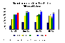

ניתוח דו"חות פיננסיים ויסודות ביקורת פנימית
|  |
99-943 רו"ח שמואל רוזנבלום
|
עדכון אחרון: 03/04/2012 18:59
סיכומי שיעור
תשס"ה:
מסכם: ליאור צירלין
17.10.04 - 24.10.04 - 31.10.04 - 07.11.04 - 14.11.04 - 21.11.04 - 28.11.04 - 19.12.04 - 26.12.04 - 09.01.05 - 16.01.05
מסכם: נתן ליבוביץ
17.10.04 - 24.10.04 - 31.10.04 - 07.11.04 - 14.11.04 - 21.11.04 - 28.11.04 - 05.12.04 - 19.12.04 - 26.12.04 - 02.01.05 - 09.01.05
מסכם: אלדד פרקש
תשס"ג:
מקורות
תשס"ה:
טבלאות מדדים ודו"ח יחסים פיננסיים - חברת קרגל
דו"ח הדירקטוריון - חברת קרגל - 2003
דו"חות כספיים - חברת קרגל - 2003
הכנה למבחן
הכנה למבחן, ניתוח דו"ח קרגל – טבלה מסכמת וסעיפי שקד
מבחנים משנים קודמות
תשס"ו - מועד א + פתרון בציון 91 - קרנית אקריש , מועד ב + פתרון בציון 100 + פתרון בציון 100
תשס"ה - מועד א
תשס"ד - מועד א: פתרון בציון 99 - אוריאל פרינץ
תשס"ג - מועד א: חלק א' + חלק ב' + פתרון בציון 98
תשס"א - מועד א